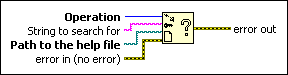

Control Online Help Function
Owning Palette: Help VI and Functions
Requires: Base Development System
Controls a compiled help file by displaying the table of contents, jumping to a specific topic in the file, or closing the help file.
You can create a compiled help file and use this function to link from a VI to the help file. You also can use this function to display an HTML file in the default browser.
(Real-Time Module) You cannot use this function in VIs that run on RT targets.

 Add to the block diagram Add to the block diagram |
 Find on the palette Find on the palette |